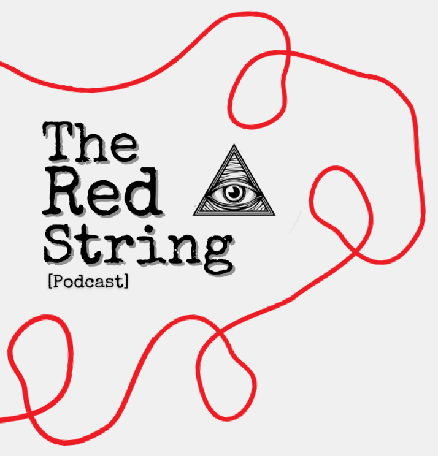
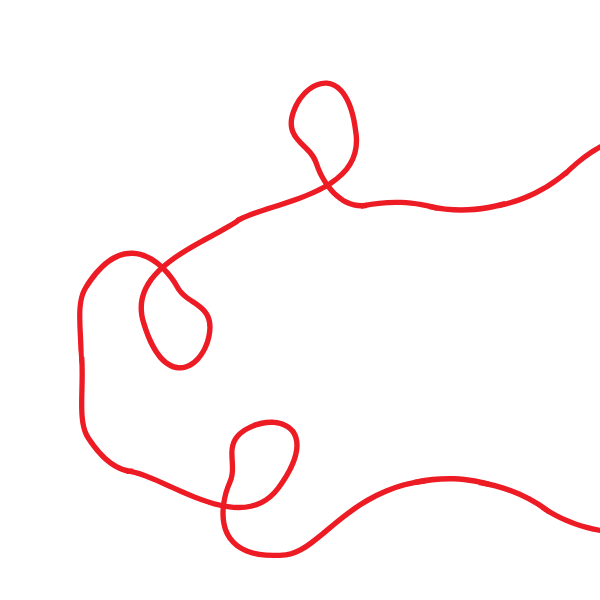
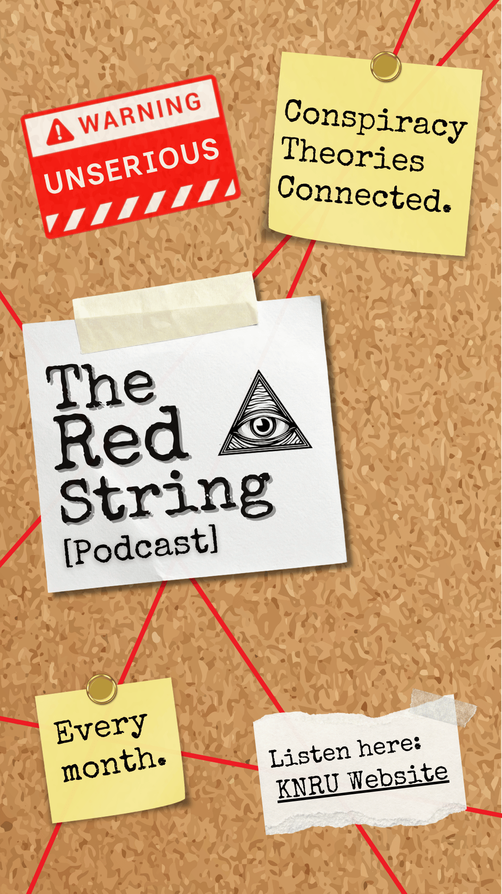

The Red String is a conspiracy theory podcast brand created entirely by me. The show name comes from the visual associated with conspiracy theories— photos, notes, and clues all connected by red string across a board. This idea drives both the visual and conceptual direction of the brand, emphasizing connection and mystery.
Read More
⌄

Designed specifically for Instagram Stories, this social media ad uses minimal, intentional elements to communicate the message without overwhelming the viewer. The goal is to introduce The Red String by clearly conveying what the podcast is about, where it can be accessed, and how often new content is released.
The concept for The Red String's banner art was to visually bring the name to life in a way that feels clear and immediately recognizable. The design reinforces the meaning behind the title by incorporating subtle visuals that reflect connection, mystery and the idea of linking information together